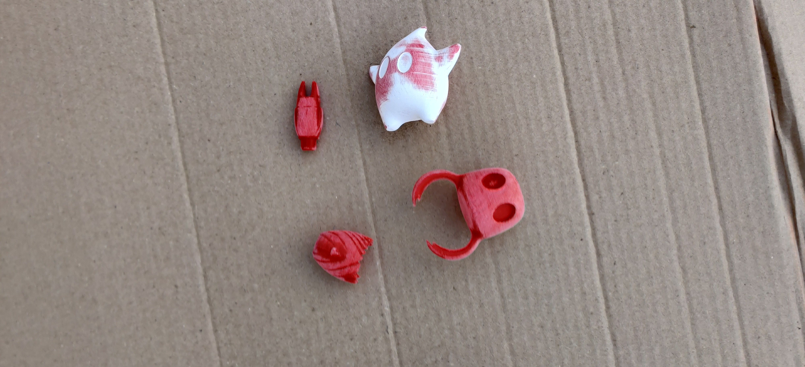
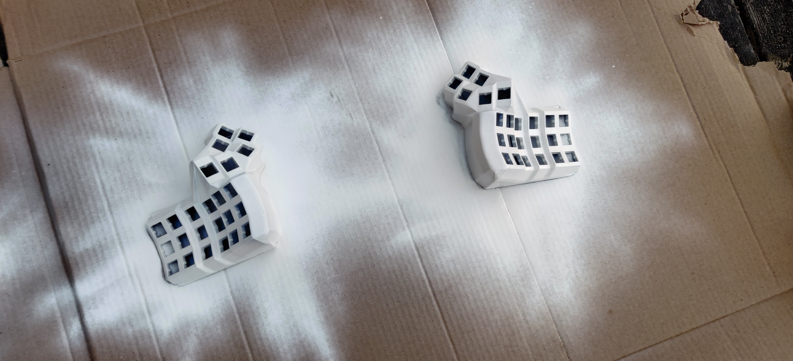
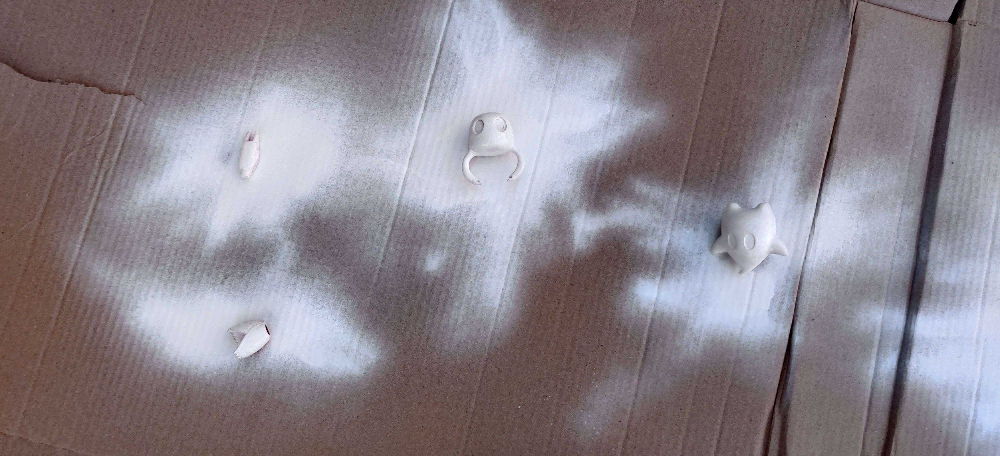
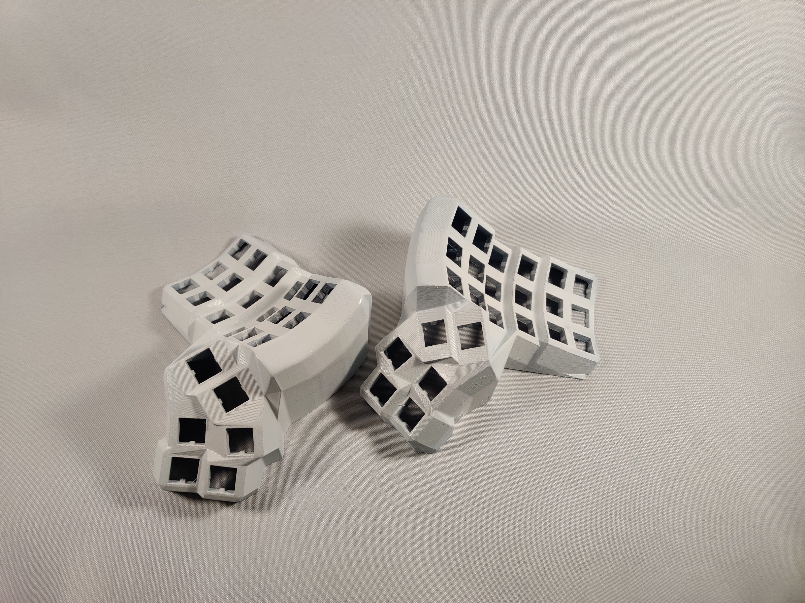
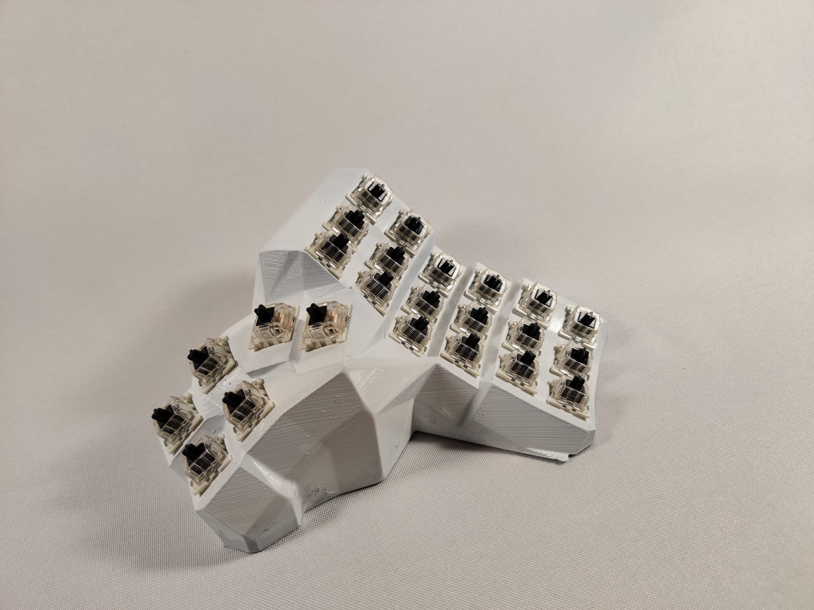
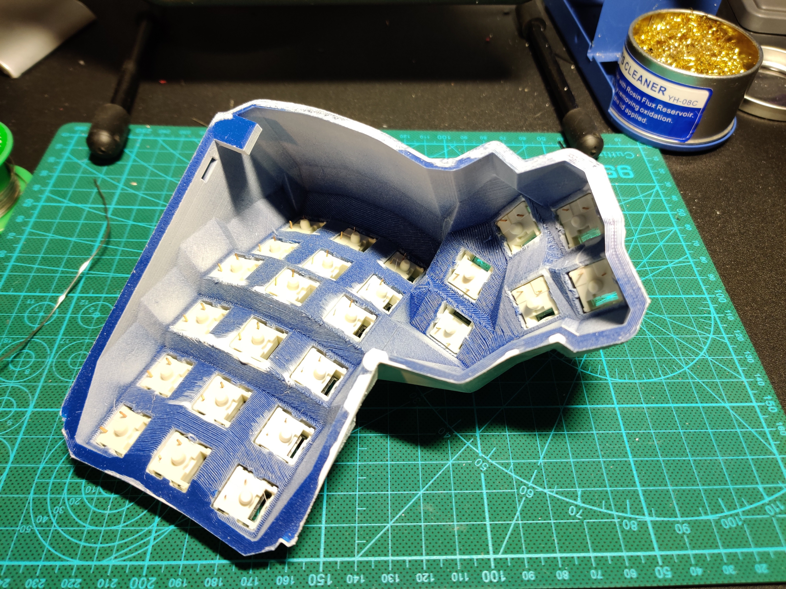
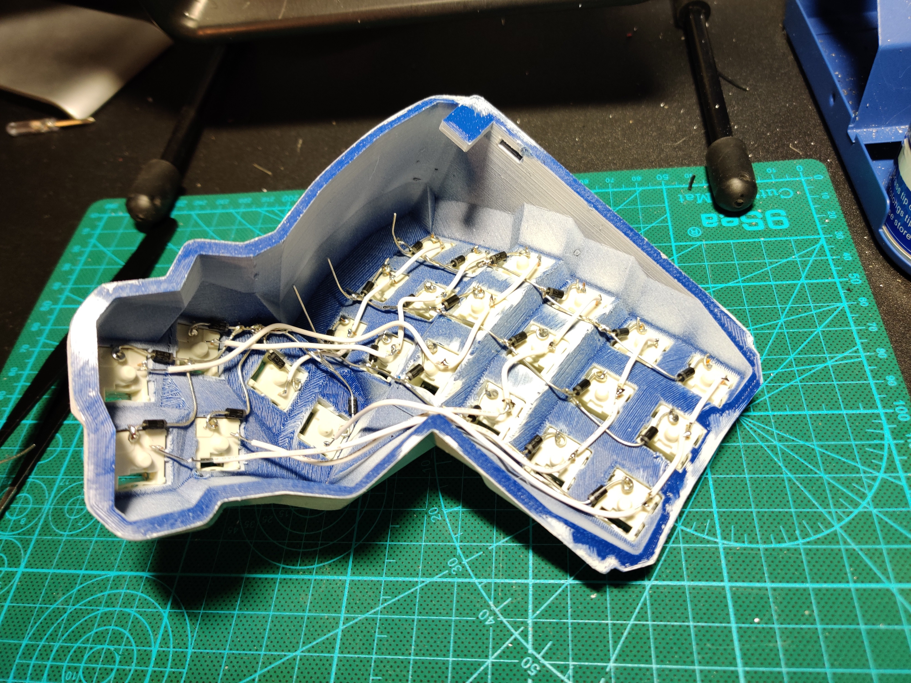
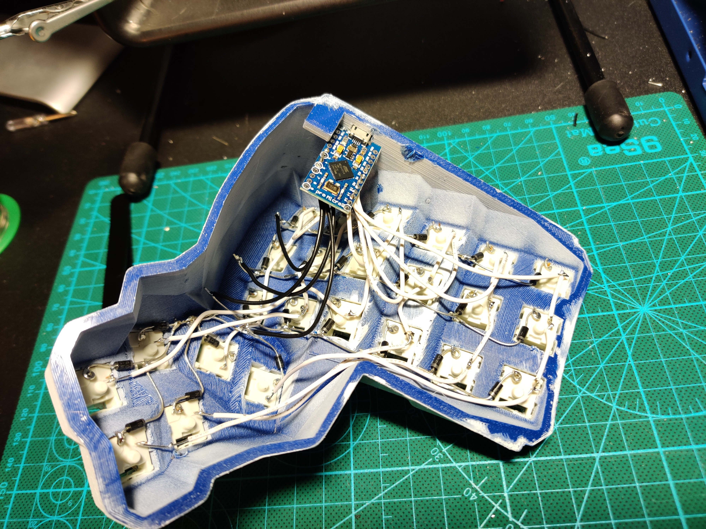
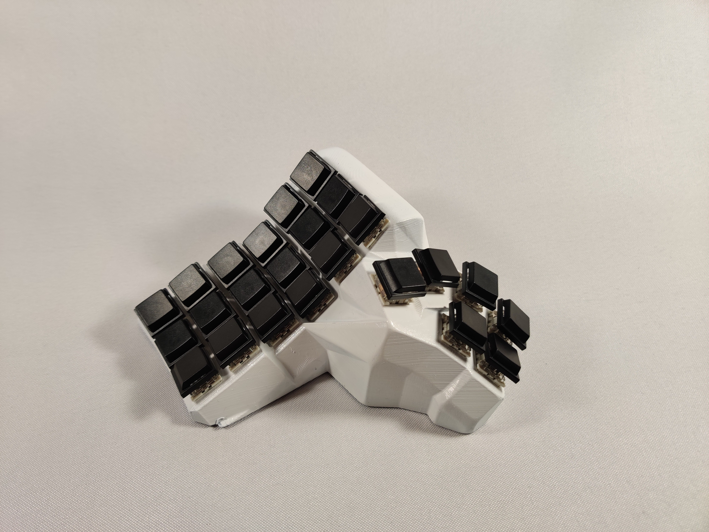
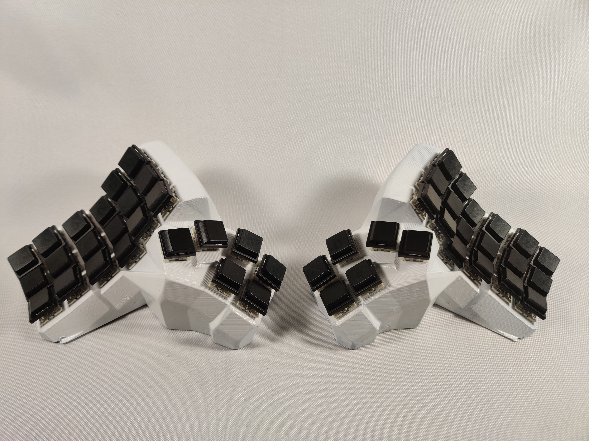

—「0X://Explanation」
Wii and stickers equal (exposed gamecube ports) a prettier wii.
i wanted to keep at it with 3d printed handwired builds, and i needed to learn painting 3d prints, so this was the product of that. i wanted to keep a good pace but weather was not cooperating to let me try painting... smh. anyway, on to the log!
things in this project:
> arduino pro micros
> key switches (cherry black)
> lube (krytox g502)
> printer filament (blue)
> cherry rc128bm keycaps
> solder
> wire
> diodes
> spray paint (white)
first up is creating the layout and hex file to flash the board, i have made a guide as to not repeat myself every handwire project:
i think it is always best to start by flashing the pro micro first, so thats what i did. follow this guide i have made previously:
> flashing arduino pro micro <
next your gunna need a 3d model. i used this wonderful generator:
handwiring guide toooo
now with all the tutorials out of the way, on to the process!
i printed it and removed the mountainous supports, i didn't want to waste a nice color so i used this ugly blue as i planned on painting it.
finalllly the weather cleared up and i could paint them! i sanded, used a primer, sanded again and then painted, though it didn't turn out the best. ive learned from this attempt and will hopefully see better results in the future.





then i put the switches in and did the wonderful process of handwiring, it was a pain but i got it all done in like 4 hours (including programming the firmware an whatnot)




then i just put some caps on it and hand painted the figurines! thats all really, was a fun time!


ft. hollow knight and super mario galaxy luma
┈ ren ♡